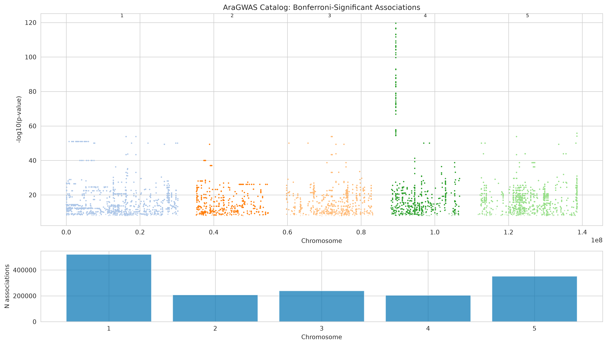
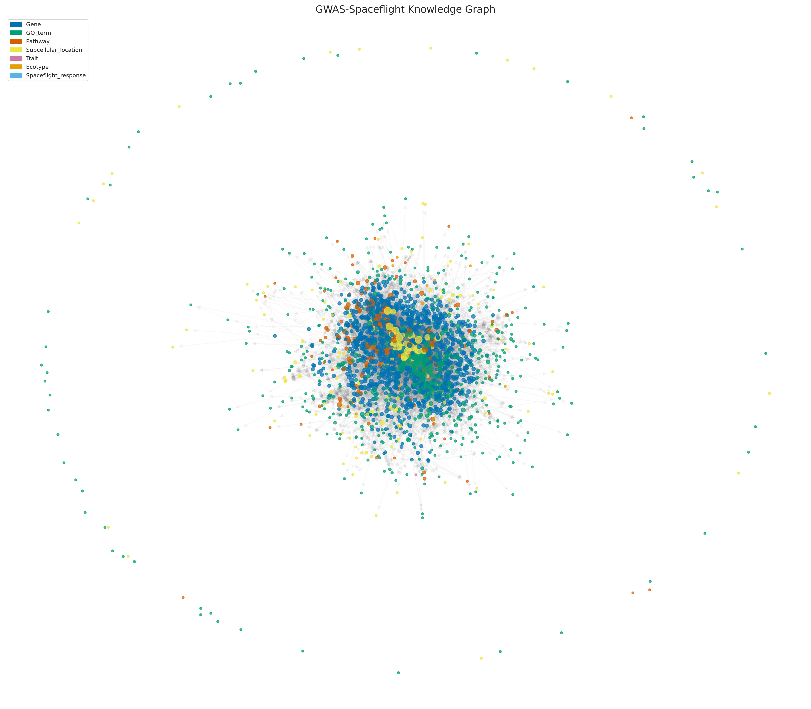
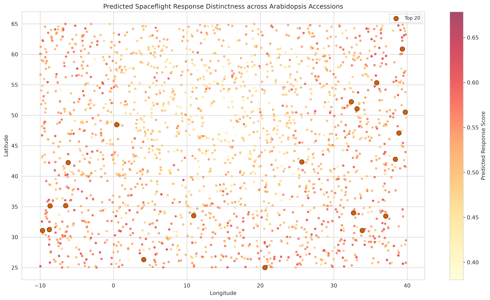
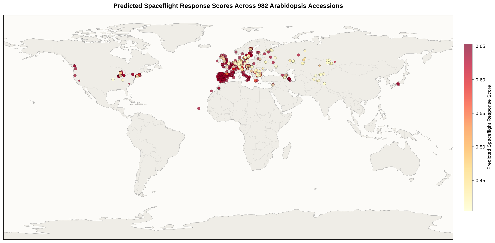
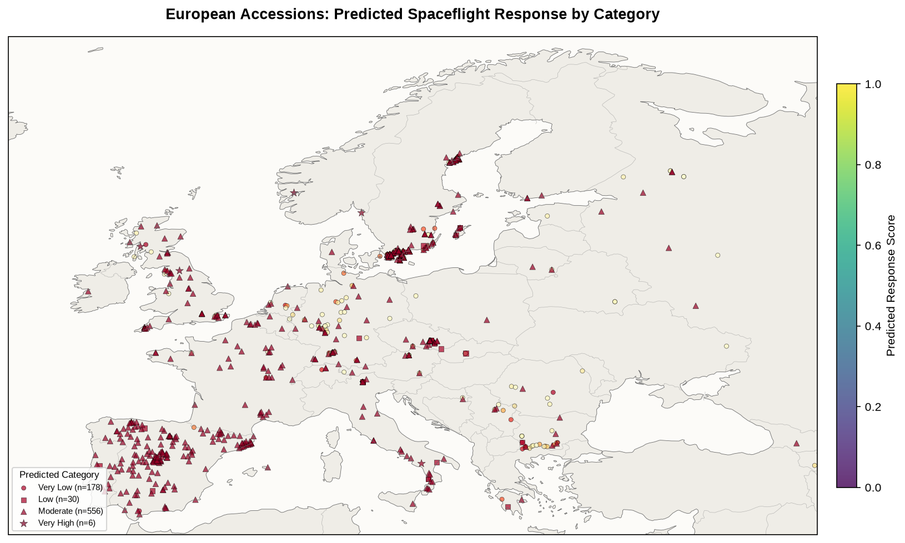
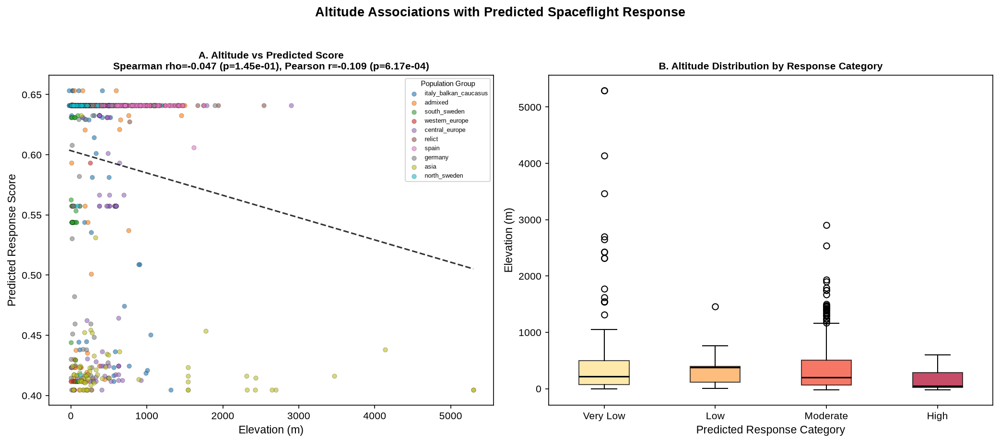
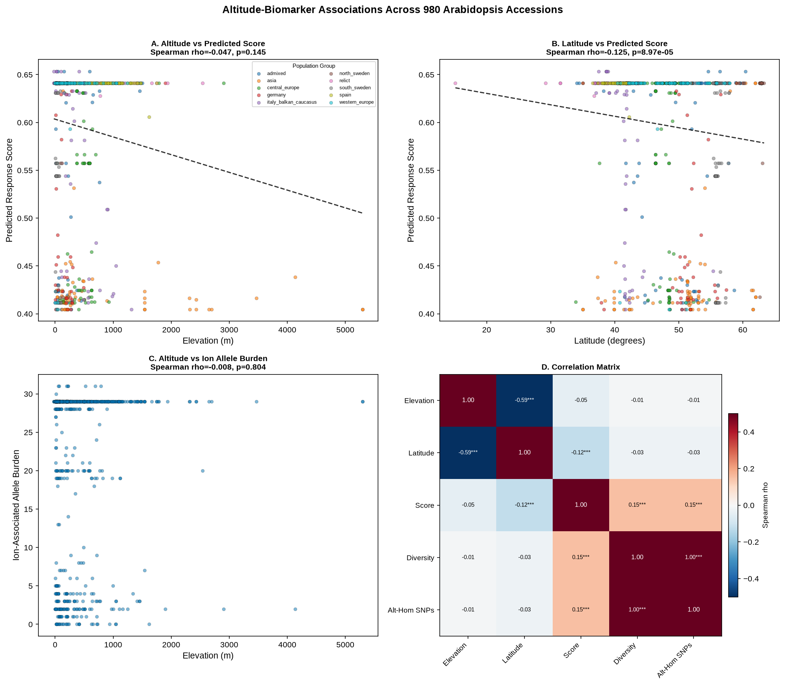

Figure 1: AraGWAS Catalog Overview
Manhattan plot displaying 1,523,262 Bonferroni-significant SNP-trait associations across 285 GWAS studies and 279 phenotypes in Arabidopsis thaliana.

Figure 2: Spaceflight Transcriptomic Meta-Analysis & GO Enrichment
Cross-study volcano plot and top enriched GO Biological Process categories across 17 NASA GeneLab spaceflight studies (2,550 consensus DEGs).

Figure 3: GWAS-Spaceflight DEG Integration
Over-representation analysis showing 763 overlap genes between GWAS candidates and spaceflight DEGs (Odds Ratio = 4.23, p = 4.45e-102).

Figure 4: Machine Learning Classifier Performance
ROC curve (AUC = 0.999), Precision-Recall curve (AP = 0.986), and Gini feature importance rankings from nested cross-validated Random Forest modeling.

Figure 5: Multi-Layered Knowledge Graph Architecture
Network graph (24,565 nodes, 92,904 edges) interconnecting GWAS loci, DEGs, GO terms, KEGG pathways, subcellular localizations, and ecotypes.

Figure 6: Global Ecotype Spaceflight Distinctness Map
Geographic distribution of predicted spaceflight response scores across 2,029 natural Arabidopsis accessions.

Figure 14: 1001 Genomes Real Genotype Mapping
Global map of 982 accessions genotyped across top GWAS SNPs and paired with Open-Meteo elevation data.

Figure 15: European Latitudinal & Altitudinal Sampling Density
High-density regional map over Europe displaying predicted spaceflight response tier classifications.

Figure 16: Elevation vs. Response Score Regression
Scatter plot and linear regression testing altitudinal variation against predicted spaceflight response scores.

Figure 17: Multi-Panel Altitude & Biomarker Diagnostics
Four-panel analysis evaluating elevation, latitude, photorespiration log2FC, and ion content allele burden.

Figure 18: Ion Homeostasis GWAS Enrichment & Locus Sharing
(A) Fold enrichment across 10 ionomic traits; (B) Co-localization of 29/31 top SNPs on Chromosome 4.

Figure 19: Photorespiratory C2 Cycle Expression Heatmap
Expression changes across 56 photorespiration genes in spaceflight studies (94.6% significantly DE).

Figure 20: Chromosome 4 Shared Locus Architecture (AT4G02820–AT4G02860)
Gene-level diagram and trait co-localization network for the ~14 kb shared locus on Chromosome 4.

Figure 21: Extended Window Altitude & Latitude Regressions
Correlation regressions testing expanded polygenic risk scores across 763 GWAS overlap genes against elevation and latitude.

Figure 22: Latitudinal Clinal Score Variation
Scatter plot with population group color coding highlighting clinal latitudinal gradients in spaceflight response distinctness.

Figure 23: Chromosome 4 Ion Content GWAS Manhattan Plot
Zoomed view of Chromosome 4 ion QTL peaks overlapping the top spaceflight-predictive SNP cluster.

Figure 24: Spatial Heatmap of Predicted Scores over Europe
Color-contoured geographic heatmap showing regional clustering of high/low predicted spaceflight response accessions.

Figure 25: Chromosome 4 Linkage Disequilibrium Matrix
Heatmap of pairwise r² LD values across the 29 Chr4 SNPs, demonstrating haplotype redundancy (Effective SNPs Me = 4.2).

Figure 26: Global Spatial Response Surface
Continuous interpolated spatial plot of predicted spaceflight response scores across global accession origins.

Figure 27: Population Stratification Violin Plots
Distribution of predicted spaceflight response scores across 10 demographic population groups from the 1001 Genomes Project.

Figure 28: Geographic Origins of the Top 10 Prioritized Accessions
Regional map displaying origin coordinates, elevation (m), population group, and rank across Europe, the Caucasus, and the Middle East for the Top 10 prioritized accessions.